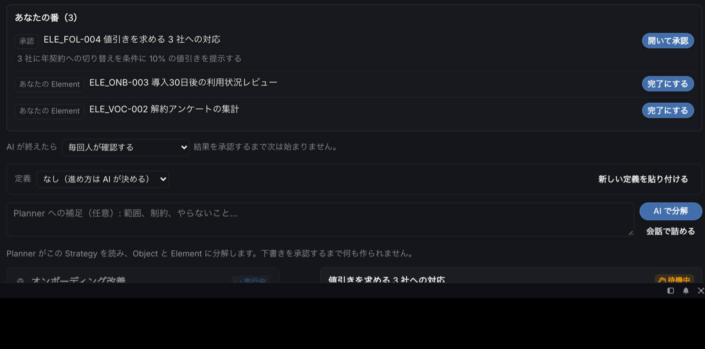
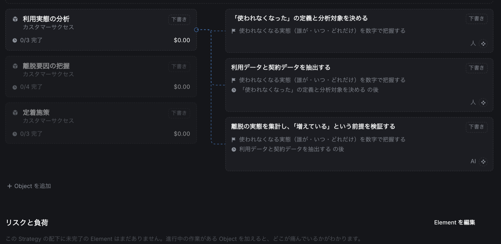
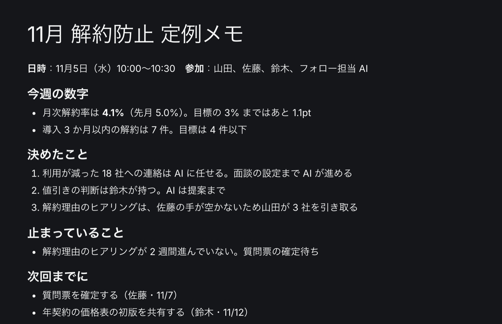

想定ユースケース
組織が違っても、止まる場所は似ています。よくある課題に、Alcon をどう使うか。具体的な場面で紹介します。
B2B SaaS・カスタマーサクセス

解約率 5.0% → 4.1%。休眠顧客への連絡が、一度も止まらなくなった
8 人のカスタマーサクセスチームが、解約防止の仕事を AI と分け合った話。
エピソードを読む →製造業・新規事業室

3 か月言い直していた方針が、翌日には 10 件の仕事になった
「何から手をつけるか分からない」新規事業室が、曖昧な方針を AI と一緒に分けた話。
エピソードを読む →人材サービス・営業部

週 90 分の部門定例が、30 分になった
5 つの課をまとめる営業部長が、進捗の読み上げをやめた話。
エピソードを読む →病院・業務改善委員会
担当が 3 回変わっても、改善活動が止まらなかった
異動の多い病院の業務改善委員会が、引き継ぎ資料をつくるのをやめた話。
エピソードを読む →※ 想定ユースケースです。登場する組織・人物・数値は、Alcon の使い方を説明するための架空のものです。画面は実際の Alcon です。